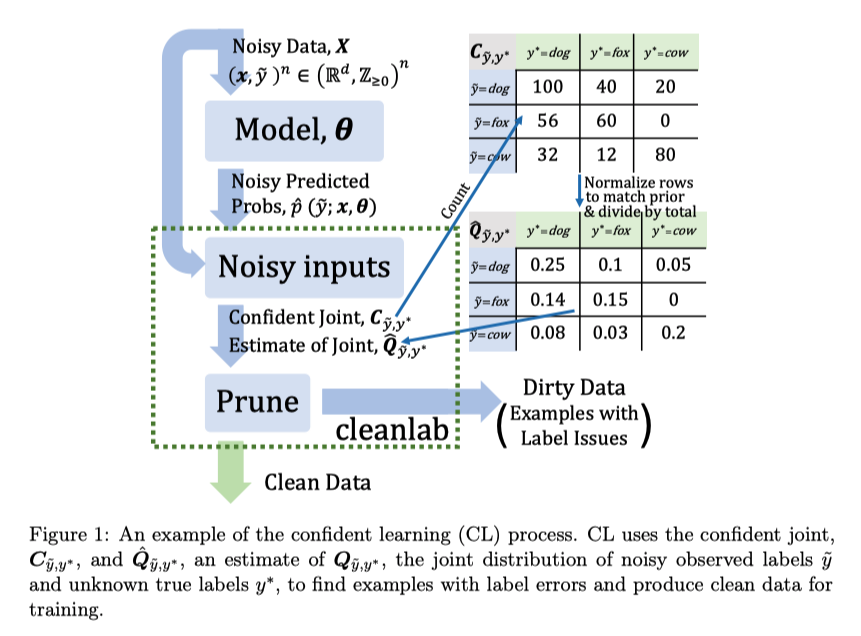
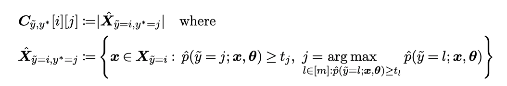
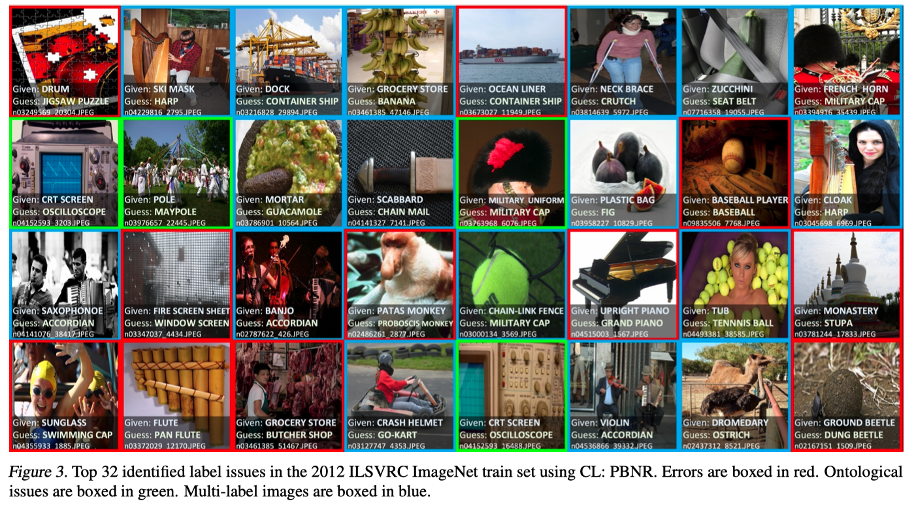
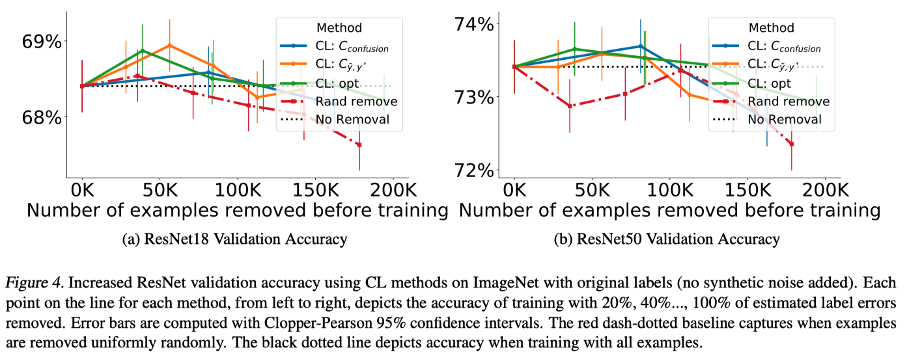

Wang ICML’20 Understanding Contrastive Representation Learning through Alignment and Uniformity on the Hypersphere¶
https://arxiv.org/pdf/2005.10242.pdf
著者
Tongzhou Wang (MIT)
Phillip Isola (MIT)
1. Introduction¶
ノイジーラベルにおける学習は通常、新しいモデルや損失関数を導入する
しかし、このようなアプローチは、「どのデータが誤ってラベル付けされているのか」という真の問題を曖昧にすることがある
この論文ではデータ中のラベルノイズを正確に発見するというアプローチを取る
本論文では、3つの貢献をしている
CLはラベルエラーを正確に見つけながら、現実的な仮定のもとでjoint distribution of noisy and true labels を正確に推定できることを証明する
CLが3つのタスク(a)ラベルノイズ推定、(b)ラベルエラー推定、(c)ノイズのあるラベルを用いた学習において実験的に性能が高いことを示し、ノイズのあるラベルの学習において比較手法を上回る性能を持つことを示す
全ての結果を再現し、今後の研究を支援するためにcleanlabをPythonパッケージとして公開した
2. Framework¶
ノイズを含む可能性のあるラベルを用いた標準的な多クラス分類を考える
Assumptions
class-conditional classification noise process (CNP)(Angluin & Laird, 1988) を仮定する。
CNP : クラスjのラベルは、独立に確率 \(p(\tilde{y}=i | y^*=j)\) でクラスiとして誤ラベルされるという仮定 (データに依存しない)
この仮定は合理的であり(?)、先行研究（Goldberger & BenReuven, 2017; Sukhbaatar et al, 2015）でも使われている
Notation

Goal
\(Q_{\tilde{y}, y^*}\) (The m × m joint distribution matrix for \(p(\tilde{y}=i, y^*=j)\)) を推定して、ノイズラベルを判定すること
3. CL Methods¶
{kind=link}
イラストにするとCLは上のような工程、文章にすると以下
ノイズまじりのラベルとそのノイズまじりのデータで学習したモデルを使った予測値を用意する
予測値を計算するモデルは予測対象が訓練データに入らないように、CV的に複数モデルを作って予測する
\(\hat{Q}_{\tilde{y}, y^*}\), \(C_{\tilde{y}, y^*}\) (後述) を使って削除するサンプルを決める
2で決めたサンプルを削除して、学習する
\(\cfrac{1}{\hat{p}(\tilde{y}=i | y^*=i) } = \cfrac{\hat{Q}_{y^*}[i]}{\hat{Q}_{\tilde{y}, y^*}[i][i]}\) で各クラス \(i \in [m]\) を重み付けする
\(C_{\tilde{y}, y^*}\) の計算¶
{kind=link}
{kind=link}
文章にすると \(C_{\tilde{y}, y^*}\) は、 「クラスjがモデルが推論する確率を(t以上の値をもつなかで)最大化するクラスでかつ、クラスiとラベル付けされているサンプルに対して モデルがクラスjと推論した確率が \(t_j\) 以上の個数」
\(t_j\) はクラスjとラベル付けされているサンプルに対してモデルがクラスjと推論した確率の平均。
この定義はある状況下でいくつかの良い特性をもつ
あるサンプルがほぼ一様に低い予測確率を持つ場合、それはどの:math:C_{tilde{y}, y^*} にもカウントされないので、\(C_{\tilde{y}, y^*}\) は純粋なノイズやデータセットにない異質なクラスなサンプルに対してロバストである可能性がある
クラスjに属するサンプルの期待確率よりも高い確率もつサンプルは、たぶんクラスjに属するだろうという直感を具現化している
閾値は必ずしも平均値を使う必要がない。より高い信用度でエラーを見つけるために平均の代わりに例えば90percentileを使えとか。(しかし平均はSec4で示す理論的な正当性を持っているのでこの論文では平均を使う)
\(\hat{Q}_{\tilde{y}, y^*}\) の計算¶
{kind=link}
クラスのサンプル数でcaribrateして
全部足して1になるようにしている
ラベルエラーの決め方¶
いくつか提案している
Approach : Use off-diagonals of \(C_{\tilde{y}, y^*}\) to estimate \(\hat{X}_{\tilde{y}=i, y^*=j}\)
(baseline) \(C_{confusion}\) : boolean vector \(\tilde{y}_k ~!= \arg \max_{j \in [m]} \hat{p}(\tilde{y}=j; x_k, \theta) ~ \forall x_k \in X\) がtrueならラベルエラー、falseならクリーン
\(C_{\tilde{y}, y^*}\) : \(\{x \in \hat{X}_{\tilde{y}=i, y^*=j} : i \neq j\}\) をラベルエラーとして扱う
Approach : Use \(n \cdot \hat{Q}_{\tilde{y}=i, y^*=j}\) to estimate \(|\hat{X}_{\tilde{y}=i, y^*=j}|\), prune by probability ranking
Prune by Class (PBC): 各クラス \(i \in [m]\) で \(\hat{p}(\tilde{y}=i; x\in X_i, \theta)\) が低いものから \(n \cdot \sum_{j \in [m]: j \neq i} (\hat{Q}_{\tilde{y}=i, y^*=j} [i])\) 個 選ぶ
Prune by Noise Rate (PBNR) : 各off-diagonal \(\hat{Q}_{\tilde{y}=i, y^*=j}, ~i\neq j\) に対して、margin (\(\hat{p}_{x,\tilde{y}=j}-\hat{p}_{x,\tilde{y}=i}\) ) の大きいものから \(n \cdot \hat{Q}_{\tilde{y}=i, y^*=j}\) 個選ぶ
C+NR: PBCとPBNRを組み合わせて、両方の手法どちらも選んだものを選択する
4. Theory¶
4.1 Noiseless Predicted Probabilities¶
Condition 1 (Ideal)
\(\forall x_k \in X_{y^*=j}, ~i \in [m], j \in [m]\) に対して、\(\hat{p}(\tilde{y}=i; x_k \in X_{y^*=j}, \theta) = p^*(\tilde{y}=i|y^*=j)\) が成り立つとき、 モデル \(\theta\) が idealであるという。
Theorem 1 (Exact Label Errors)
モデル \(\theta\) が idealで \(Q_{\tilde{y}|y^*}\) の対角成分がそれに対応する行、列の中で最大値であれば、 \(\hat{X}_{\tilde{y}=i, y^*=j} = {X}_{\tilde{y}=i, y^*=j}\) と \(\hat{Q}_{\tilde{y}=i, y^*=j} \simeq {Q}_{\tilde{y}=i, y^*=j}\) が成り立つ。
証明のところに書いてあるのだが、\(\hat{Q}_{\tilde{y}=i, y^*=j} \simeq {Q}_{\tilde{y}=i, y^*=j}\) となっているのは、 \(C_{\tilde{y}, y^*}\) から \(\hat{Q}_{\tilde{y}, y^*}\) を計算するときに離散化エラーがあるから。 たとえば、noise rateが0.39だとして、そのクラスのサンプルは5つしかないとき、\(\hat{Q}\) は2/5=0.4になってしまうため。
4.2 Noisy Predicted Probabilities¶
Condition 3 (Per-Example Diffracted)
{kind=link}
\(\epsilon_j = \mathbb{E}_{x \in X} [\epsilon_{x, \tilde{y}=j}]\) 、\(\mathcal{U}\) は正規分布として、\(\hat{p}_{x, \tilde{y}=j} = p^*_{x, \tilde{y}=j} + \epsilon_{x, \tilde{y}=j}\) が成り立つとき、 \(\hat{p}_{x, \tilde{y}=j}\) は per-example diffracted であるという。
Theorem 2 (Per-Example Robustness)
noisy dataset \(X := (x, \tilde{y})^n\) とモデル \(\theta\) に対して, label collisions がなくて \(\hat{p}_{x,\tilde{y}=j}\) が per-example diffractedで \(Q_{\tilde{y}|y^*}\) の対角成分がそれに対応する行の中で最大であれば、 \(\hat{X}_{\tilde{y}=i, y^*=j} \simeq {X}_{\tilde{y}=i, y^*=j}\) と \(\hat{Q}_{\tilde{y}=i, y^*=j} \simeq {Q}_{\tilde{y}=i, y^*=j}\) が成り立つ。
label collisions の定義がなかったのだが、証明を見てみると \(\{ x \in X_{\tilde{y}=i} : \hat{p}(\tilde{y}=j; x, \theta) \ge t_j, j = \arg \max_{l \in [m]: \hat{p}(\tilde{y}=l) \ge t_l} \hat{p}(\tilde{y}=l; x, \theta) \} = \{ x \in X_{\tilde{y}=i} : \hat{p}(\tilde{y}=j; x, \theta) \ge t_j \}\) が成り立つ状況のことのようだった つまり \(\hat{p}(\tilde{y}=j; x, \theta) \ge t_j\) を満たすクラスjっていうのは、他のクラスでその条件を満たすものの中では最大になっていないといけないという条件
なにが言いたいのかというと、予測確率にちょっと誤差乗っていてもCLはちゃんと \({Q}_{\tilde{y}=i, y^*=j}\) が推定できるということ。
\(\mathcal{U}\) の表記について理解できず・・・ (引数は平均分散じゃないの・・・)
証明のところに書いてあるのだが、 \(\hat{X}_{\tilde{y}=i, y^*=j} \simeq {X}_{\tilde{y}=i, y^*=j}\) となっているのは、 \(n \rightarrow \infty\) にすれば=になるが、現実的にそうはならんので \(\simeq\) になっている。
5. Experiments¶
以下の2つのデータセットでCLを実験的に評価する
CIFAR (Krizhevsky & Hinton, 2009)
ImageNet (Russakovsky et al., 2015)
Sec.5.1では、真のラベルが既知である CIFAR に人工的にラベルノイズを追加して実験する。
Sec.5.2 では ImageNet を用いた実環境のノイズ識別と、CL で学習した場合の性能向上を示す。
5.1 Asymmetric Label Noise on CIFAR-10 dataset¶
ノイズの生成
先行研究（Sukhbaatar et al., 2015; Goldberger & Ben-Reuven, 2017）に従い、実世界のノイズに似せるため、非一様で非対称なラベルノイズに対するCLパフォーマンスを検証する
ランダムに生成したノイズ確率にしたがって、訓練サンプルのラベルを非一様に異なるクラスにランダムに切り替えることで、クリーンデータからノイズデータを生成する
評価はノイズを加えていないテストセットで行う
比較手法
INCV (Chen et al., 2019): 複数回のクロスバリデーションでクリーンデータを見つけ出し、クリーンセットで学習
SCE-loss(Wang et al., 2019): ロス補正のためにreverse cross entropy termをロス関数を追加
Mixup (Zhang et al, 2018）: サンプルとラベルを線形結合してデータを増強する
MentorNet（Jiang et al., 2018): カリキュラム学習を用いて学習時にノイズデータを回避する
Co-Teaching (Han et al., 2018): クリーンデータから学習するために2つのモデルを並行して学習する
S-Model (Goldberger & Ben-Reuven, 2017: ソフトマックス層を追加して学習時のノイズをモデル化
Reed（Reed et al., 2015): loss-reweighting
設定
モデルはResNet-50
ハイパーパラメータをもっている比較手法は、一番精度が良かったものを採用
{kind=link}
CLは全てのnoise rate と sparsity において他の先行技術に勝つ
高ノイズ領域では有意な改善、低ノイズ領域では中程度の改善
他の手法と比べてCLは現実的な高いスパース性を持つノイズに対しても精度が低下しない
{kind=link}
Figure 2 は、CIFARの高ノイズ（40%）、高スパース（60%）の領域におけるCLの品質を示したもの
(a): \({Q}_{\tilde{y}=i, y^*=j}\) (True joint)
(b), (c)を見るとCLは \({Q}_{\tilde{y}=i, y^*=j}\) の80%以上の要素を絶対差0.005以内で推定している
{kind=link}
表2は、真のラベルをrecoverするための精度、再現率、F1を載せている。
CLは高い再現率と適切なF1でラベルの誤りを発見できる。
5.2. Real-world Noise with ImageNet¶
{kind=link}
Ontological discovery via label noise characterization
ImageNetは単一クラスデータセットなのでクラスは相互に排他的でないといけない
\(C_{\tilde{y}, y^*}\) の非対角成分をみてオントロジー問題を見つけた
maillotというクラスが2回出現すること
bathtubがthubであるようなis-a関係のクラスが存在する
projectileとmissileのような誤称
cornとearのように複数の意味を持つ単語による予期せぬ問題
Training ResNet on ImageNet with label issues removed
{kind=link}
ResNet50（図4b）とResNet18（図4a）を用いて、ImageNetの学習データからノイズとなる事例を徐々に削除し、性能を計測
他のベースラインはラベルエラーを識別できない可能性があるため、比較対象としていない